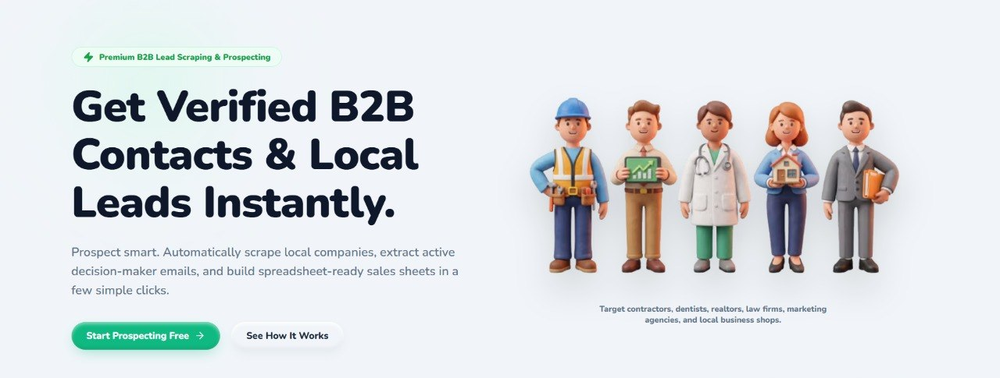
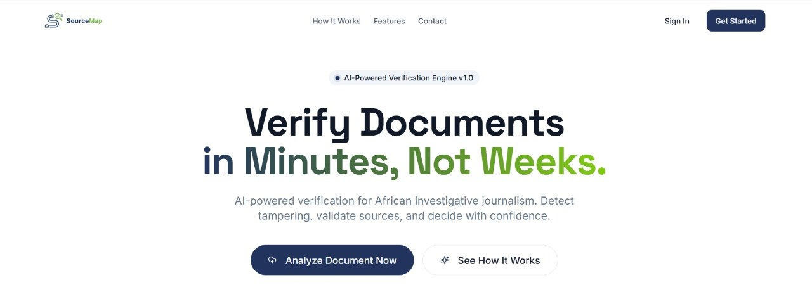
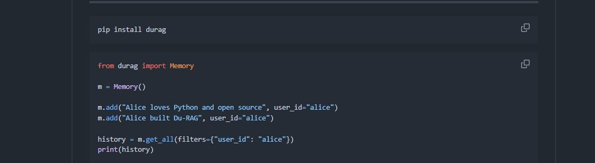

I build products that help people work with information at scale. From B2B prospecting platforms used by hundreds daily to document verification tools deployed across African newsrooms.

leadork.com arrow_forward
sourcemap.africa arrow_forward
GitHub arrow_forwardLeadork crosses 100 daily active users across US and global markets.
Sourcemap Africa onboarded 40+ newsrooms across Nigeria.
Du-RAG v2.1: memory consolidation with dynamic entity relationship extraction.
Communication Analysis Tool for human-AI driving experiments. Speaker identification and transcription for safety-critical research.
Won Nosana Web3 Hackathon 1.0 — deployed complex containers to decentralized compute network.